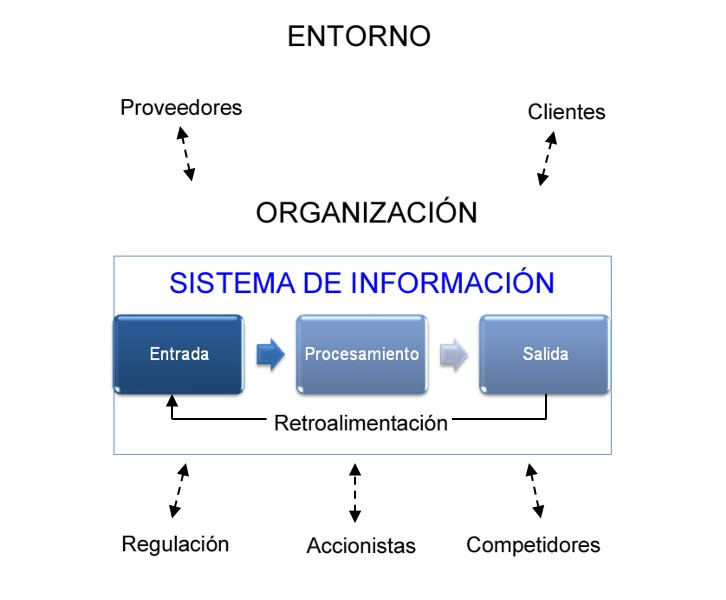

Se define como un sistema de información (SI) al sistema de recogida, almacenamiento y transmisión de información. En términos sencillos, es la interacción de personas y ordenadores para procesar e interpretar unos datos.
El término también se utiliza para definir el software que se utiliza para las bases de datos, Pero esta definición se utiliza más a menudo para referirse a todo lo que implica una capa superficial: usuarios, procesos, redes de comunicación, entradas y salidas.
El objetivo principal de cualquier sistema de información es apoyar las operaciones, la gestión y la toma de decisiones.

Los SI pueden según el grado de automatización pueden ser manuales, los cuales, utilizan la tecnología de papel y lápiz o automatizados, los cuales son apoyados por tecnologías de información para ingresar, almacenar y procesar datos y
distribuir, compartir y comunicar la información, los SI automatizados a su vez son denominados SI computarizados o CBIS
(Sistema de información basados en computadora) y pueden ser total, mediana o parcialmente automatizados>
Dada la existencia de distintos intereses, especialidades y niveles dentro de una organización, hay diferentes clases de sistemas. Un único sistema puede proveer toda la información que una organización necesita, presenta una forma de describir las clases de sistemas halladas en una organización.>
Los sistemas de información se caracterizan según su: